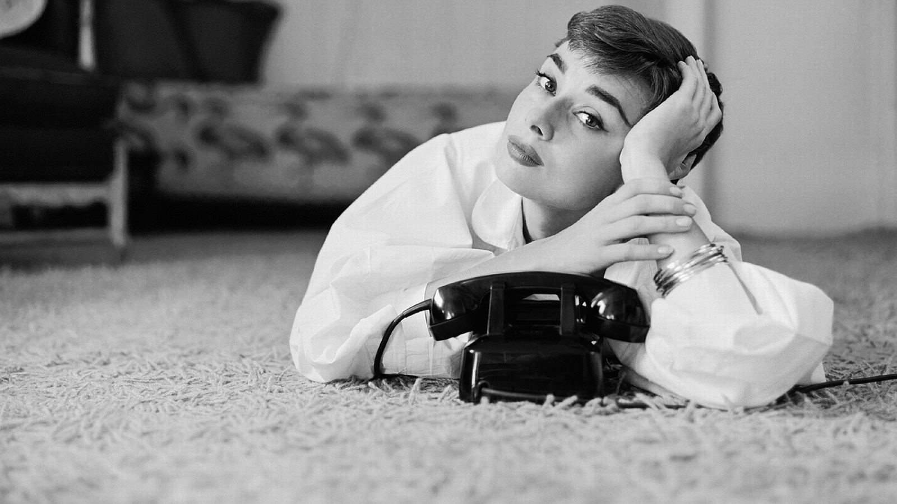

Sua História
Audrey chegou ao estrelato depois de ter interpretado o papel principal em Roman Holiday (1953), pelo qual ganhou o Óscar, BAFTA e Globo de Ouro de melhor atriz. Em 1961, Hepburn estrelou seu papel mais conhecido: Holly Golightly, em Breakfast at Tiffany's , pelo qual recebeu sua quarta indicação ao Óscar de melhor atriz e foi nomeada ao Globo de Ouro de melhor atriz em comédia ou musical.
Em reconhecimento à sua carreira cinematográfica, ela ganhou uma estrela na Calçada da Fama de Hollywood — que homenageou sua dedicação e contribuição ao cinema mundial. Reconhecida como um ícone de cinema, estilo e moda, Hepburn foi classificada pelo American Film Institute como a terceira atriz mais importante da Era de Ouro de Hollywood.
A partir da década de 1970, Hepburn apareceu em menos filmes, dedicando grande parte dessa fase de sua vida à UNICEF. Ela contribuiu para a organização desde 1954, depois trabalhou em algumas das comunidades mais pobres da África, América do Sul e Ásia entre 1988 e 1992. Recebeu a Medalha Presidencial da Liberdade em reconhecimento ao seu trabalho como Embaixadora da Boa Vontade da UNICEF em dezembro de 1992. Em 20 de janeiro de 1993, aos 63 anos de idade, a atriz morreu na cidade de Tolochenaz, Suíça, em virtude de um câncer de apêndice.